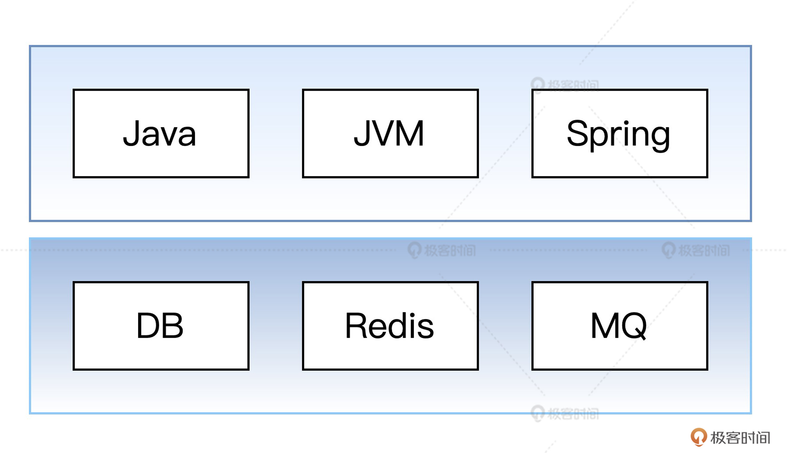
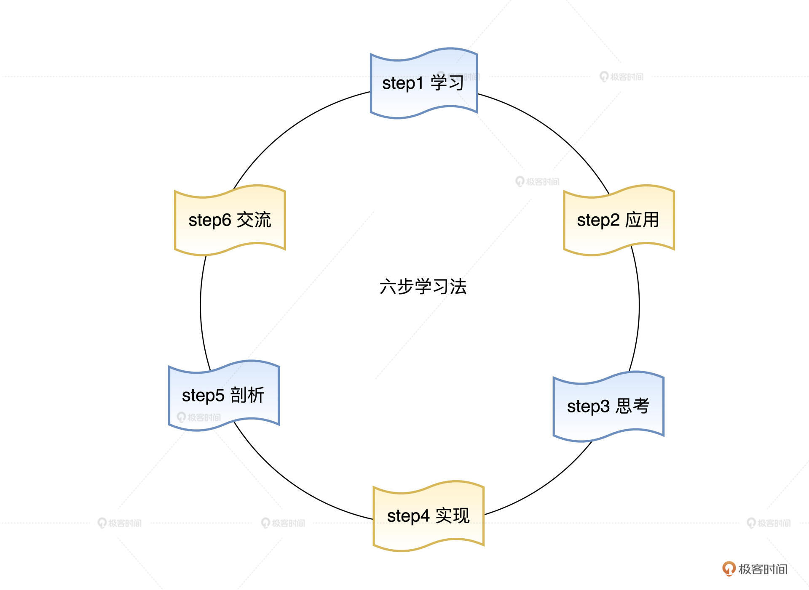

- 00 开篇词 为什么要学写一个操作系统？.md.html
- 00 编辑手记 升级认知，迭代自己的操作系统.md.html
- 01 程序的运行过程：从代码到机器运行.md.html
- 02 几行汇编几行C：实现一个最简单的内核.md.html
- 03 黑盒之中有什么：内核结构与设计.md.html
- 04 震撼的Linux全景图：业界成熟的内核架构长什么样？.md.html
- 05 CPU工作模式：执行程序的三种模式.md.html
- 06 虚幻与真实：程序中的地址如何转换？.md.html
- 07 Cache与内存：程序放在哪儿？.md.html
- 08 锁：并发操作中，解决数据同步的四种方法.md.html
- 09 瞧一瞧Linux：Linux的自旋锁和信号量如何实现？.md.html
- 10 设置工作模式与环境（上）：建立计算机.md.html
- 11 设置工作模式与环境（中）：建造二级引导器.md.html
- 12 设置工作模式与环境（下）：探查和收集信息.md.html
- 13 第一个C函数：如何实现板级初始化？.md.html
- 14 Linux初始化（上）：GRUB与vmlinuz的结构.md.html
- 15 Linux初始化（下）：从_start到第一个进程.md.html
- 16 划分土地（上）：如何划分与组织内存？.md.html
- 17 划分土地（中）：如何实现内存页面初始化？.md.html
- 18 划分土地（下）：如何实现内存页的分配与释放？.md.html
- 19 土地不能浪费：如何管理内存对象？.md.html
- 20 土地需求扩大与保障：如何表示虚拟内存？.md.html
- 21 土地需求扩大与保障：如何分配和释放虚拟内存？.md.html
- 22 瞧一瞧Linux：伙伴系统如何分配内存？.md.html
- 23 瞧一瞧Linux：SLAB如何分配内存？.md.html
- 24 活动的描述：到底什么是进程？.md.html
- 25 多个活动要安排（上）：多进程如何调度？.md.html
- 26 多个活动要安排（下）：如何实现进程的等待与唤醒机制？.md.html
- 27 瞧一瞧Linux：Linux如何实现进程与进程调度_.md.html
- 28 部门分类：如何表示设备类型与设备驱动？.md.html
- 29 部门建立：如何在内核中注册设备？.md.html
- 30 部门响应：设备如何处理内核I_O包？.md.html
- 31 瞧一瞧Linux：如何获取所有设备信息？.md.html
- 32 仓库结构：如何组织文件_.md.html
- 33 仓库划分：文件系统的格式化操作.md.html
- 34 仓库管理：如何实现文件的六大基本操作？.md.html
- 35 瞧一瞧Linux：虚拟文件系统如何管理文件？.md.html
- 36 从URL到网卡：如何全局观察网络数据流动？.md.html
- 37 从内核到应用：网络数据在内核中如何流转.md.html
- 38 从单排到团战：详解操作系统的宏观网络架构.md.html
- 39 瞧一瞧Linux：详解socket实现与网络编程接口.md.html
- 40 瞧一瞧Linux：详解socket的接口实现.md.html
- 41 服务接口：如何搭建沟通桥梁？.md.html
- 42 瞧一瞧Linux：如何实现系统API？.md.html
- 43 虚拟机内核：KVM是什么？.md.html
- 44 容器：如何理解容器的实现机制？.md.html
- 45 ARM新宠：苹果的M1芯片因何而快？.md.html
- 46 AArch64体系：ARM最新编程架构模型剖析.md.html
- LMOS来信：第二季课程带你“手撕”计算机基础.md.html
- 大咖助场 以无法为有法，以无限为有限.md.html
- 用户故事 yiyang：我的上机实验“爬坑指南”.md.html
- 用户故事 成为面向“知识库”的工程师.md.html
- 用户故事 技术人如何做选择，路才越走越宽？.md.html
- 用户故事 操作系统发烧友：看不懂？因为你没动手.md.html
- 用户故事 用好动态调试，助力课程学习.md.html
- 用户故事 艾同学：路虽远，行则将至.md.html
- 结束语 生活可以一地鸡毛，但操作系统却是心中的光.md.html
- 捐赠
用户故事 技术人如何做选择，路才越走越宽？
你好，我是宇新。
作为《操作系统实战45讲》的编辑。从专栏上线到现在已经有3个多月的时间了，感谢你一直坚持到现在。
留意过课程评论区的同学都知道，我们有几位常驻的同学一直在主动输出。那这些“课代表”是怎样学习专栏，又有什么学习诀窍？
为了满足咱们的好奇心，我特意策划了这次特别的采访，请到了在专栏里留下很多精彩足迹的neohope同学，我会代表好奇的小伙伴向他提问，希望这次的分享能够带给你一些启发。
首先让我介绍一下neohope，他是一个技术爱好者，年龄就不说了。neohope做过很多的岗位，像是软件工程师、项目经理、项目总监、产品经理、架构师、研发总监等，现在他在医疗健康行业工作。
让我们正式开始这次采访吧！
如何搭建自己的学习体系
Q1：你好，neohope。你的课程笔记帮到了不少人，看得出你学得很认真，能给同学们说说，对于学好《操作系统实战45讲》这个专栏，你有哪些建议么？
A1：你好，关于怎么学好这门课程。我有这样几个建议作为参考。
第一个建议是多动动手：前期看到有些小伙伴不会用虚拟机，也不会命令行，但其实大部分同学花上几个小时也就搞定了。有了感性的认识，后面学习就不那么抽象了；
第二个建议就是够用就好：不要一看里面有汇编语言，就去从头学汇编；也不要一看C语言，就去学C。我的建议是，能读懂就够了，不会的命令网上找一下就可以了。其实，我们不妨想一下，自己小时候是如何读书的？有些看不懂的字，其实可以跳过去，这不影响理解的；
然后，我建议你多看源码：其实我的方法很笨，就是把老师的注释先拷贝到课程源码里，再结合自己的思考理解补充一些注释，这样读起来还是很简单的；
接着，就是要多理资料：有些地方看不太懂的，就去查资料，建议你把看完的资料，用自己的方式整理出来，然后分享，这样会有很好的效果；
最后，要找到组织：不要自己孤军奋战，找几个小伙伴定期聊聊，参与一些好的技术群，多交流会让你提升很快。自己迷惑的问题，可以问一下，看看别人如何理解的，不要害羞。
Q2：感谢neohope的建议。从你的留言里可以看出你对操作系统认识很深，即使是比较复杂的调用过程，你也总能很快地理清脉络，把握全局。这是怎么做到的呢？
A2：其实操作系统也好，其他技术也好，想要理解透彻都需要一个过程，而非一蹴而就。我觉得建立自己的知识体系，是一种很好的方法。
Q3：这个知识体系你是怎么建立的呢？可否分享一下，让入行不久或即将入行的小伙伴做个参考么？
A3：在我日常工作中，经常会遇到要教新人的情况，每一次带一位新人，我都会要求他/她做这样几件事情。
1.首先，我会请他用图解的方式，画一下自己会哪些技术；- 2.然后，跟他深入聊几个常见问题，比如下面这些问题：
- 用谷歌浏览器打开一个登录页面，输入用户名、密码，当用鼠标点击登录按钮时，究竟发生了什么？
- 如何自己做一个框架，去实现Spring Boot、Flask或WCF等相关功能；自己平时用框架有没有不爽的地方，想要如何改进它？
- 找一个大家都熟的业务场景，聊一聊如何在技术或非技术层面进行改进……
3.在技术上，我还会问问他，后续的学习发展计划是怎样的，自己想学什么，优先要学什么？- 4.最后，我会帮他/她去逐步建立一个技术栈，并以此为出发点，做一个为期1到3年的技术规划。
Q4：前面几步听起来有点像面试的场景。你是怎样想到用这个方法呢？
A4：我接着刚才知识体系说，因为工作以后，相比在学校系统学习，我们现在接触的信息大多都是碎片化的，对自己掌握了什么技术，我们并没有清晰的了解。而且根据我多年观察，即使是一些平时工作很认真的人，都没有去好好整理过自己的知识体系，这很可惜。
我第一次跟新入职的同学沟通时，可能最开始往往得到的是一堆的技术名词。

这个时候，我会根据小伙伴自己的技术栈，帮他/她搭一个简单的体系框架，把上面的技术名词归类放好，这里我以后端工程师为例。
然后，对于重点关注的层，还可以进一步展开。咱们是自学操作系统，那这里就把OS层展开。
之后，可以把自己整理的图和可信度高的资料进行对比。咱们这里就把上图和Cosmos、Linux进行一下对比。根据对比，摘取自己需要的内容，对自己的图进行补充。


参考：https://makelinux.github.io/kernel/map/
这样，你自己的知识体系就有了雏形。接着，对于自己要重点学的内容，进一步展开，比如说，对于锁这个知识点，我是这样拆分的。
- 乐观锁、悲观锁
- 公平锁、非公平锁
- 重入锁、不可重入锁
- 自旋锁、非自旋锁
- 独享锁、共享锁、读写锁
- 分段锁、行锁、表锁
- 分布式锁、共识算法
- ……
之后，对于这些知识点，我们可以用不同颜色进行标记（后面我列出了我自己习惯用的标记方式）。标记好了以后，你可以把“必须，未掌握，红色”的内容，整理一个清单，排个优先级，作为未来一段时间学习计划的参考。

A、必须，已掌握，绿色- B、必须，未掌握，红色- C、非必须，已掌握，绿色- D、非必须，未掌握，黄色
其实，这个知识体系就像是一张藏宝图，上面的一个个知识点就是一个个宝藏。实际使用的时候，我们不用花很大精力去做这个图，也不用限制是何种模式，一个markdown文件足够了，对自己有帮助就好。
随着你的积累和进步，每经过一个时期，都可以重新看下这个藏宝图，常看常新。
如果你特别喜欢自己的藏宝图，但图中有不少盲点，那就先找最基础的东西看，探索一段时间，迷雾自然就少了；如果你的藏宝图虽然很大，但能挖掘的精华有限，建议先找一张对你最有用的图，精力不要过于分散。如果这张图的要点你都掌握了，就需要扩展知识面，再去开个副本吧！
Q5：你的藏宝图方法听起来很酷，看得出你对不同的技术栈都比较熟悉，可以说说你的思考么？比如，不同技术栈怎样找共同点？
A5：随着不断的学习，我发现不同的技术栈，的确有很多相似的地方，就像是同一类型的宝藏。然后去看细节，又会发现不一样的地方，就像每个宝石，纹理都不一样。
以操作系统及虚拟机为例，你有没有想过Linux、Windows、Android、iOS、Docker、VritualBox、JVM、CLR、V8，都在管理哪些事情呢？
虽然这些技术并不在一个层面，其实很多要做的事情，却是很相似的。比如，都需要CPU管理、内存管理、任务管理、处理同步问题、文件管理、I/O管理、资源隔离、提供统一而稳定的API等。
然后，从任务管理这个角度再去看，还能看到优先级、时间片、抢占式、沙盒、命名空间、配额、欺上瞒下、甩手掌柜、单脑回路等等精彩的宝石纹理。
Q6：刚才说了不少寻找共性的思路，掌握了很多技术以后，你会怎么去分析它们呢？
A6：技术千千万，但追究其本质，技术都是为了解决具体问题的，这里我举三个例子吧。
以远程调用为例（远程调用推荐你看下公开课《周志明的软件架构课》），CORBA、DCOM、EJB、Webservice、REST、Thrift、ProtocolBuffer、Dubbo等，这些技术都在解决什么问题呢？这些技术的流行和没落的原因是什么呢？
我们想要解决类似RPC的问题，都是定义了一套规范要调用方和被调用方共同遵守，而且都提供了代码的辅助生成工具。那为何至今还会有很多新的技术出来，要解决这个问题呢？咱们就又要去观察“纹理”了。
以任务调度为例，从操作系统进程调度，到线程池、Socket连接池、DB连接池、对象池，再到F5、Nginx、Dubbo的流量控制，以及到大数据的Yarn、容器的编排，它们都在解决哪些问题？
再以低代码为例，ESB、OA（流程编辑器+表单设计器）、FaaS平台、SaaS平台，都在解决什么问题，给出的答案又有什么差异？这种思考方式还有很多例子，我就不一一列举了。
随着不断的学习，你会发现，不同的技术栈，有很多重叠的地方。比如，数据结构与算法、网络、数据库、文件处理、加密解密、系统调用等。一旦一次学会，就像打通任督二脉，在另外的地方，遇到类似问题的时候，就无师自通了。
Q7：那不同的技术栈，你会怎么样做对比呢？
A7：不同的技术栈，有很多不同的思路。就拿泛型为例，每种语言各有不同。
- C语言，可以通过函数指针或宏来实现，需要一定的编程技巧；
- C++语言，一般通过STL来实现，在编译时实现，会造成代码膨胀；
- Java语言，通过类型擦除实现，编译时擦除，JVM运行时并不知道处理的是什么类型；
- C#语言，在编译生成IL中间码时，通用类型T只是一个占位符；在实例化时，根据实际类型进行替代，并通过JIT生成本地代码，不同类型的泛型类是不一样的；
- Go语言，当前版本，并不支持泛型，可以通过interface强制转换，需要一些编程技巧；
- JavaScript语言，动态类型，天生支持泛型。
Q8：感觉这样做了对比之后，确实更容易加深理解。这个方法只能用在分析泛型么，可以不可以再举个例子？
A8：好，我们再以继承为例，看看每种语言都是什么思路？
- C语言，虽然通过一些编程技巧可以达到类似效果，但C不是面向对象语言包，一般不算支持继承；
- C++语言，支持规格的继承（纯虚函数）和实现的继承（支持多个父类），多个父类会提升语言复杂度，造成很多问题；
- Java语言，支持规格的继承（接口）和实现继承（支持单个父类），单个父类有时会无法复用部分代码；
- Ruby语言，支持规格的继承（接口）和实现继承（支持单个父类），同时mixin解决了代码复用的问题；
- Go语言，支持规格的继承（接口）和实现继承（基于组合），是一个优雅代码复用的解决方案；
- JavaScript语言，基于原型的继承。
学习方法相关
Q9：说完学习体系的搭建，neohope可以分享一下，自己学习某个具体技术时，有什么好方法么？
A9：在日常学习过程中，我自己总结了一个六步学习法，其实几步不重要，重要的是构建一个不断上升的螺旋就可以了。我的六步是这样的：学习、应用、思考、实现、剖析、交流，最后交流这一步又可以连回学习。

这样说有点抽象，就拿很多小伙伴都会的Spring技术为例，你可以这样学习。
首先，找本好书或好的教程，学习Spring的使用。然后在学习和工作中，开始使用Spring框架。在使用的时候，就要去思考Spring框架的核心功能是如何实现的，比如IoC是如何实现的？
有了一定积累，也做了不少思考之后，自己可以尝试去写一个IoC框架，并且对比源码或好的文章，去看下自己框架有哪些地方没有考虑好，试试改进。
我们在上小学、初中的时候，都会有一个错题本。掌握不好的知识点，会记录到本子上，定期拿出来看一下。建议你在工作和学习过程中，也养成这种复盘的习惯。比如，每天晚上洗澡的时候，可以想想，今天我做的事情有什么可以改进的地方。
最后，还要记得和同行多交流，学习高手的经验，进行深层次思考。发现不足后，再次进行学习。
关于交流我还想额外说两点，一个是练好英语，另外就是自己试着输出。工程师的英语要掌握到什么程度呢？在我看来，至少要可以流畅地看英文技术文档。不说别的，国外有很多高质量的技术文档及视频，真的很好。
另外，就是写博客写文章。相信很多小伙伴都知道费曼学习法，把别人教会才算真懂。写博客有很多好处，可以帮自己整理思路，可以加深对知识的理解，可以帮到别人。运营得好不仅可以得到收益，也可以给自己赢得名声。我自己也有写技术博客的习惯，你感兴趣的话可以看下这里。
学习心态与职业规划相关问题
Q10：刚才我们聊了不少学习本身的事儿，其实学习方法之外，心态也很重要。现在很多人总是处于知识的焦虑中，无法沉下心学习，这个问题你是怎么看的呢？
A10：现在是一个知识爆炸的时代，有各种各样的技术，有各行各业的知识。一打开电脑或手机，就感觉一堆东西要学，天天都有新框架，日日都有新名词，焦虑浮躁不堪。再加上网络上充斥着各大厂面试要求，更是让我们感觉内卷严重。
更糟糕的是，我们还总看到某些大厂根据年龄裁员的报道，感觉自己马上就要失业了，喘不过气来。不过我觉得吧，有紧迫感是个好事情，但过度焦虑大可不必。
如果你是一个学生或新人，不建议盲目追新，很多技术追着追着就没了。打基础，追主流，聚焦技术重点，就好了。
我们一直觉得国内内卷严重。但你不妨听一下吴军博士的演讲，日美欧早就开始用其他形式卷了，总结一下就是，“内卷是社会发展到一定阶段的必然，是社会从粗放型到精细型转换的产物”。
内卷不可怕，可怕的是不断的重复自己，10年经验，只不过把第1年的事情重复了10年而已，新技术啥都不会，这样的人不失业谁失业？
任何行业，从来都缺少优秀的人，但从来都不缺螺丝钉。30岁有30岁的要求，40岁有40岁的要求。40岁还拿“螺丝钉”的要求考量自己，是不行的。不要说开发，哪个行业都不行。
其实来咱们专栏学习的小伙伴，已经比业界大多数人都要勤奋好学了。只要我们做好规划，不断朝目标前进，一定会收获一个不错的结果。优质的人才，在任何一个行业都是稀缺的。
A11：刚才你说“40岁不应该再拿螺丝钉要求自己了”。这就涉及到职业规划的问题，可以说说你的看法么？
Q11：有些小伙伴，从业一段时间后，又开始纠结，“我是不是该转管理了啊，我是不是做产品试试，我什么时候能做架构呢”。如果你也有这样的困惑，我建议你问自己这样一个问题，你想发展“技术+什么”？
如果你技术很好，学新东西特别快，广度和深度都很好，那你可以走技术+技术这条路。当然这里可以细化，比如说如果你技术很好，对数据安全方面特别感兴趣，就可以走技术+数据安全这条路。
如果感觉技术纵深不适合，但你对行业特别感兴趣，可以考虑技术+行业这条路，一方面懂技术，一方面懂行业知识，这样的人哪个行业都缺，很棒！ 比如你技术不错，对行业、对公司产品又有深入的理解，不妨试试解决方案专家这条路；对公司产品有深入的理解，又懂客户、会聊天，技术+售前、技术型销售这些方向，都可以考虑。
如果你技术不错，又有一定的领导力，喜欢和人打交道，也可以做技术+管理这条路；如果你不光技术不错，还特别善于把自己所学传授他人，也可以做技术+培训这条路……

这样的选择，很多很多。路要越走越宽，不要越走越窄。以后你要“技术+什么”？这才是每个人自己要面对的问题。我对职业规划的理解大概是这些。
好，谢谢neohope，谢谢你给同学们分享了这么多建议、思考。
正如neohope同学所说，学习不是一蹴而就，而是要搭建自己的学习体系。想成为优秀的工程师，首先要对自己有充分的了解。“35岁魔咒”这样让人焦虑的问题，我们也不妨换个思路看，想一想自己可以走“技术+什么”的道路。
像neohope这样，把自己的学习思考，变成能分享给他人的方法论，的确是一件很酷的事儿。很期待这次的分享能够带给你不一样的思考，让我们共同学习进步！
© 2019 - 2023 Liangliang Lee. Powered by gin and hexo-theme-book.